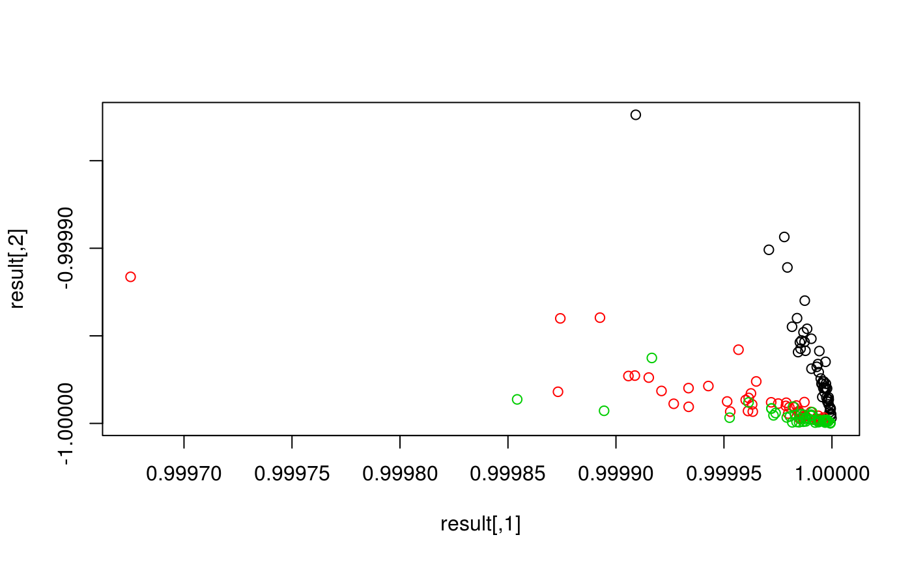

Ruta is based in well known open source deep learning library Keras and its R interface. For now, it has been only tested with the Tensorflow backend. In order to install these dependencies you will need the Python interpreter as well, and you can install them via Python’s package manager pip or possibly your distro’s package manager if you are running Linux.
$ pip install tensorflow
$ pip install kerasYou should now be able to install Ruta from the R command line, with the following command:
devtools::install_github("fdavidcl/ruta")Most autoencoders are designed with feature extraction in mind. This is why Ruta provides an easy way to train an easy autoencoder on some data and extract the learned features:
library(ruta)
iris_x <- as.matrix(iris[, 1:4])
iris_y <- iris[, 5]
result <- autoencode(iris_x, 2)
# You can show the learned features in a scatter plot
plot(result, col = iris_y)
We can customize the neural structure of our autoencoder, as well as other parameters that affect its learning behavior.
library(keras)
library(magrittr)
# Specifies one hidden layer with 36 units and tanh activation function
network <- input() + dense(36, "tanh") + output("sigmoid")
print(network)
learner <-
network %>%
# The robust autoencoder uses a custom objective function, correntropy
autoencoder_robust(sigma = 0.2) %>%
# Adds weight decay onto the encoding layer
add_weight_decay()Now we load the famous MNIST dataset and train the learner with it:
# Load, flatten and normalize
mnist <- dataset_mnist()
x_train <- array_reshape(
mnist$train$x, c(dim(mnist$train$x)[1], 784)
)
x_train <- x_train / 255.0
x_test <- array_reshape(
mnist$test$x, c(dim(mnist$test$x)[1], 784)
)
x_test <- x_test / 255.0
model <- learner %>% train(x_train, epochs = 40)We can play with this model, which includes the encoder as well as the decoder. Let’s compute reconstructions for test data:
reconstructions <- model %>% reconstruct(x_test)